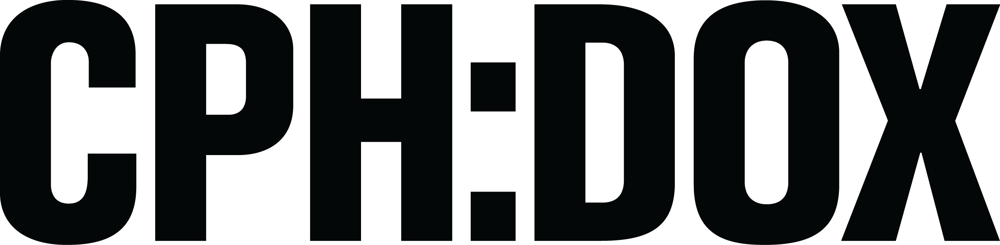

I vores andet forløb havde vi fokus på film og lyd, samt vi havde et redsignforløb. Vi blev i dette forløb undervist i filmredigering samt lydredigering, vi arbejde meget med klipning og filmproduktion.
Vi lavede i dette forløb flere filmprojekter, et af dem var vores film til CPH:DOX. CPH:DOX er en af verdens største dokumentarfestivaller. Vi skulle udarbejde en film til deres "Everyday Projekt" koncept, som går ud på at få flere folk til at filme deres hverdag, pga. mobiltelefoner har næsten alle mennesker et kamera, hvilket giver kæmpe indblik i hverdage verden over. Temaerne som vi skulle arbejde ud fra var "Demokrati" eller "mennesket", man kunne selv vælge. Vores Video "Den Danske Model" er et indblik i en lærers liv under lock-out. Vi valgte dette emne, da det var super relavant på det tidspunkt,
Vores virksomhedsforløb var delt op i to opgaver, en Virksomhedsvideo, samt redesign af den valgte virksomheds hjemmeside. Under dette forløb blev vi indelt i grupper. Vi startede ud med at lave videon til virksomheden, opgaven var her at lave en video til vores redesignhjemmeside som præsenterer den valgte virksomhed samt at formidle en kort fortælling om virksomheden. vi valgte virksomheden EcoEgo, som er et varehus, der udelukkende sælger økologiske bæredygtige varer.
Som andel del af vores arbejde med EcoEgo skulle vi lave et redesign af deres hjemmeside, hvor vores egen video selv indgår som et intergreret element, hjemmesiden skulle være responsiv og indeholder samme information som den daværende side. Hvor hjemme skulle tage udgangspunkt i en analyse samt test af firmaets egen hjemmeside